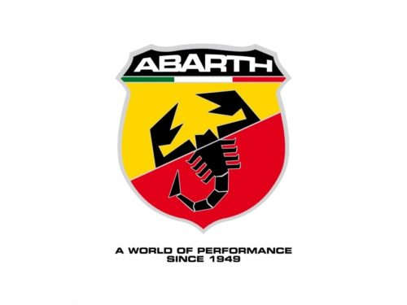
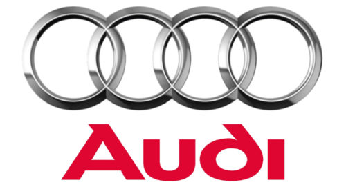
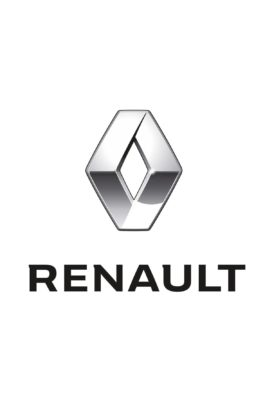

Arıza kodu silme işlemi, aracınızdaki hata kodlarının temizlenmesini ve aracın normal çalışmasını sağlamayı amaçlar. Arıza kodları, genellikle aracın elektronik kontrol ünitesi (ECU) tarafından algılanan ve kaydedilen sorunları belirtir.
Arıza kodları, aracın motor performansını etkileyebilir ve sürüş güvenliğini azaltabilir. Bu nedenle, araçtaki arıza kodlarının düzenli olarak kontrol edilmesi ve silinmesi önemlidir.
Arıza kodu silme işlemi, genellikle aracın elektronik kontrol ünitesine (ECU) bağlanarak gerçekleştirilir. Özel bir cihaz veya bilgisayar aracılığıyla arıza kodları okunur ve silinir. Bu işlem genellikle profesyonel bir servis merkezinde yapılır ve deneyimli teknisyenler tarafından gerçekleştirilir.
Profesyonel bir servis merkezinde yapıldığında, arıza kodu silme işlemi güvenli bir şekilde gerçekleştirilir. Ancak, işlem sonrasında aracın düzenli bakımlarının yapılması ve teknisyenlerin önerilerine uyulması önemlidir. Ayrıca, araç üreticisinin önerilerine ve garanti koşullarına dikkat edilmelidir.